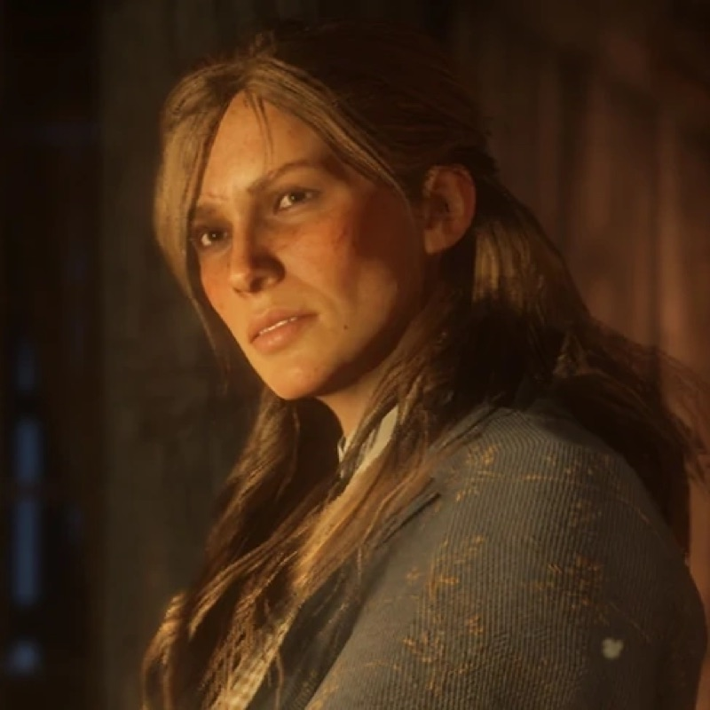
Character · Van der Linde gang
Sadie Adler
Sadie Adler is a character in Red Dead Redemption 2 (2018) and Red Dead Online. In 1899, after the O'Driscoll Boys kill her husband Jake at their ranch in Ambarino, she joins the Van der Linde gang. By 1907, she works as a bounty hunter.
She is played by Alex McKenna, who provided her voice and performance capture over five years of production.
- Born
- Not given in the games
- Status
- Alive in 1907; later fate unknown
- Nationality
- American
- Affiliation
- Van der Linde gang (1899)
- Role
- Rancher, then gang member, then bounty hunter
- Family
- Jake Adler, husband (married 1896, killed by the O'Driscolls in 1899)
- Games
- Red Dead Redemption 2, Red Dead Online
- Voiced by
- Alex McKenna
Biography
Origins
Hunting and horse riding were skills Sadie acquired early in life. On September 7, 1896, she married Jake Adler. The couple settled on a homestead in the Grizzlies West, in the state of Ambarino, not far from Colter; it is the northernmost settlement on the game's map. On the ranch, husband and wife did the same jobs: both hunted and both looked after the horses. A photograph from their wedding day is kept in the house. Sadie comes back to that arrangement several times: in 1899 she tells Arthur and Pearson that she and her husband shared the chores, and in 1907, in "A Really Big Bastard", she tells John how happy her marriage made her. She also used to play the harmonica at home.
Rockstar Games' official presentation of the Van der Linde gang sums her up in four sentences: "A widow who is hell-bent on taking revenge upon those who killed her husband. Relentless and afraid of nothing and no one. The wrong woman to cross, but very loyal to those she loves." In 1898, the year in which Red Dead Online is set, the Adlers are still working their ranch together (see the Red Dead Online section below).
Red Dead Redemption 2 (1899)
Chapter 1: Colter
Three days before the gang reaches her, by Sadie's own account, a group of O'Driscoll Boys raids the Adler Ranch. Jake is killed and his body is left in a wagon in front of the house. Sadie hides in the cellar and stays there while the O'Driscolls occupy her home. Sadie later describes the O'Driscoll who killed Jake (named Tom by the Red Dead Wiki) as a heavy-set man with a beard. When the Van der Linde gang arrives, several O'Driscolls are still at the ranch, and a single horse, a Tennessee Walker, is in the barn.
In "Outlaws from the West", Dutch, Arthur and Micah ride through a blizzard in search of supplies. Micah, scouting ahead, finds the lit homestead first and leads the other two there. Dutch goes to the door alone, passing himself off as a lost traveller, until one of the men inside recognises him. The three outlaws kill the O'Driscolls in the shootout that follows and search the property. Micah finds Sadie in the cellar. She throws a bottle at him, then grabs a knife from the table and holds him off with it. Micah insists that she is one of the O'Driscolls; Dutch answers: "No, she ain't, Micah. Look at her." Micah flips the table, a lantern falls and the house catches fire. Dutch pushes Micah away, Arthur shoves him aside, and Dutch talks Sadie down before leading everyone outside.
Outside, Sadie tells Dutch that the men came three days earlier and that her husband is dead. Dutch tells her she is safe now but cannot stay. Arthur helps her onto Dutch's horse, The Count, and reassures her: "We're bad men, but... we ain't them." On the ride, Dutch asks her name. She gives her name, Sadie Adler, starts to say "Mrs.", then stammers that he was her husband. Arthur leaves the ranch on the Tennessee Walker from the barn. Later, at Colter, if Arthur offers her the horse, Sadie says it belonged to an O'Driscoll. The house burns behind them, with Jake's body still in the wagon.
At the Colter camp, Hosea helps her down from the horse. Dutch introduces her to the gang as "this poor soul, Mrs. Adler", asks Tilly and Karen to warm her up and give her a drink, and adds: "They turned her into a widow... animals." In the cabin of the gang members who do not fight, Mary-Beth can be seen trying to console her, and Arthur can offer her food, which she turns down. In "The Aftermath of Genesis", Charles tells Arthur that the woman from the ranch has "a wild look in her eye". Arthur answers that she has lost her husband, her home and everything she owned, and that she may have family somewhere. Charles jokes that she might deal with their O'Driscoll prisoner for them; Arthur says he knows where his money would be.
Chapter 2: Horseshoe Overlook
Sadie follows the gang down to Horseshoe Overlook, near Valentine, even though its members are wanted men and women. She plays no part in the chapter's missions. Most of the time she grieves for Jake on her own, seated on a rock at the edge of camp. When she does work, it is at Pearson's chuck wagon, and she makes no secret that she does not want to be there. Abigail or Hosea can be seen comforting her. Before "Paying a Social Call", a short scene shows her bringing a plate of food to Kieran Duffy, the O'Driscoll tied up in camp; she throws the plate to the ground in front of him and walks off.
In the chapter's camp scenes she confides her grief to Abigail, who tells her that going on living takes real courage and advises her to stay in camp until she knows what to do next. When the gang celebrates the return of Sean MacGuire, freed in "The First Shall Be Last", Sadie stays out of the party and says she is in no mood for it; Abigail keeps her company for most of the evening. The set of camp scenes and conversations involving Sadie changes for good once the mission "A Strange Kindness" has been completed.
Chapter 3: Clemens Point
At Clemens Point, near Rhodes, Arthur finds Sadie arguing with Pearson in "Further Questions of Female Suffrage". She refuses to spend her days chopping vegetables and reminds him that she and Jake shared the work on their ranch. Arthur offers to take her into Rhodes for supplies, and Pearson hands him a letter to his aunt Cathy to post. On the wagon, Sadie opens the letter and reads it aloud in an imitation of Pearson, which makes Arthur laugh. In town she suggests robbing the general store; Arthur tells her they are there to avoid trouble. She goes into the store while he posts the letter, and comes back in a new outfit, shouting at the clerk who is loading the crates into the wagon.
On the way back, Sadie talks about the house that burned with everything she owned, and about the harmonica she used to play. Arthur apologises and offers to find her another one. She asks him to treat her like everyone else and says: "Nobody's taking nothing from me ever again." Two Lemoyne Raiders then ride up and order the wagon to stop. Sadie, holding the reins, shoots the first and runs down the second, and more Raiders join the fight. She and Arthur drive them off. Arthur decides not to tell Dutch about the incident, and he tells Lenny that she handled herself very well. Sadie thanks him for taking her out, and Arthur says he would gladly ride with her again. If he later brings her a harmonica, she thanks him but says she will not play it for anyone but Jake.
From this point Sadie is an armed member of the gang. She cleans her carbine repeater in camp and stands guard like the men. Few gang members say hello to Arthur as often as she does. Arthur can also play Five Finger Fillet with her: her character page dates this from "Blessed are the Peacemakers" in chapter 3, while the minigame page lists her among the chapter 4 opponents. She is in camp at the end of the chapter, in "The Battle of Shady Belle", when Pinkerton agents Andrew Milton and Edgar Ross walk into Clemens Point. Milton tells the others they will have three days to run off if Dutch comes with him. The gang members take up their weapons, Susan Grimshaw tells Milton to leave, and the gang then moves to Shady Belle, near Saint Denis.
Chapter 4: Saint Denis
At Shady Belle, Sadie asks Dutch to take her along on the gang's robberies. "Horsemen, Apocalypses" begins with her talking to Arthur about her place in the gang and the ordinary life she has left behind. Dutch then calls Arthur over to plan a robbery, and a rider enters the camp: it is Kieran, missing since the party for Jack's return, beheaded, his eyes gouged out and his head placed in his hands. The O'Driscolls attack immediately. The gang members who do not fight shelter inside the house, and the others are pushed back and barricade the door.
While Dutch posts John, Charles and Arthur inside, Arthur hears Sadie screaming outside the house. He jumps out to help her and finds her killing three O'Driscolls with a knife. He tells her to get inside; she refuses, and the two fight on together behind the house. Charles joins them toward the end, killing an O'Driscoll with a machete. The surviving attackers flee. Arthur's journal entry for the day regrets that he could not save Kieran a second time; with high honor, it also praises Sadie's courage in the fight.
Sadie is not part of the crew that robs the Lemoyne National Bank in Saint Denis at the end of the chapter, in "Banking, The Old American Art"; she stays at Shady Belle with the rest of the camp. The robbery fails. Hosea and Lenny are killed, John is arrested, and Dutch, Arthur, Micah, Javier and Bill escape aboard a ship that sinks off the island of Guarma. The people left at Shady Belle have no news of them.
Chapter 5: Guarma
While the core of the gang is stranded in the Caribbean, Sadie takes charge of those left behind. Expecting the Pinkertons to search Shady Belle, she moves the women and the non-fighting members to Lakay, an abandoned village in the bayou north of Saint Denis; the Red Dead Wiki adds that Charles helped her. According to the wiki, the group also takes the bodies of Hosea and Lenny from the city morgue and buries them in Bluewater Marsh. Before leaving Shady Belle, Sadie writes a coded letter signed "Caroline" and addressed to "Uncle Tacitus", one of Arthur's aliases. Posing as a niece, she writes that she and his "grand nieces" have gone to visit relatives in Lakay, "a small village just north of Saint Denis", and asks him to come and see them.
Back in America, Arthur finds the letter at Shady Belle in "Dear Uncle Tacitus", while Pinkerton agents search the house, and rides to Lakay. In "Fleeting Joy", the gang welcomes him with a drink and Sadie tells him that John was arrested during the robbery and is working on a chain gang at Sisika Penitentiary. Micah and Javier arrive, then Dutch, to the surprise of those who had stayed behind. Leopold Strauss tells Dutch that the group owes its survival mostly to Sadie. Bill arrives last.
The reunion is cut short. Milton and his agents surround Lakay, call on the gang to surrender and open fire with a machine gun. Sadie tells Arthur to follow her through a trapdoor so that they can come at the agents from the side. The Pinkertons set the village on fire; Bill joins Sadie and Arthur, and Arthur ends up turning the machine gun on the attackers, who retreat. Afterwards, Dutch asks for time before deciding the gang's next move. When Abigail reminds him that John is in prison and could be hanged, Dutch answers that this is not the moment. Abigail turns to Arthur and Sadie. Both agree to get John out, and Sadie, who will work on a plan, asks Arthur to meet her in Saint Denis. On his way to that meeting, in "A Fork in the Road", Arthur collapses in the street and is diagnosed with tuberculosis.
Chapter 6: Beaver Hollow
In "Icarus and Friends", Arthur meets Sadie at Doyle's Tavern in Saint Denis. Her plan is to scout Sisika from a hot air balloon, to make sure that John is still being held there. She has hired Arturo Bullard, the balloon's owner, who waits on the outskirts of the city. Bullard welcomes Arthur but refuses to take Sadie, claiming that flying upsets a woman's "vapors". Arthur goes up alone with him and pilots the balloon to the island, where he spots a prisoner in the fields whom he takes to be John. The guards open fire and the balloon drifts out of range.
On the way back, near Annesburg, Bullard spots Sadie on horseback below them, chased by a band of O'Driscolls. Arthur shoots at her pursuers from the basket. Bullard is hit twice and falls out of the balloon, dead. Arthur clears a bridge, drops a rope to Sadie and hauls her up, but the balloon runs out of fuel and comes down on a riverbank. Both survive the landing and kill the O'Driscolls who attack from across the river and from the woods. Arthur then blames Sadie for Bullard's death and for starting a fight she could have avoided. She changes the subject and asks whether he saw John. He says yes, and she proposes that the two of them break into the prison. She also tells him that Colm O'Driscoll has been caught and sentenced to hang. Arthur points out that Colm has escaped before; Sadie answers that she intends to make sure he does not escape this time.
In "Visiting Hours", Abigail asks at Copperhead Landing to come along. Arthur and Sadie refuse, saying she would be one more person to worry about, and she thanks them both. The two row out to the island. Sadie has Arthur take out the guard in the watchtower, then points out two guards with a group of prisoners, one of whom she thinks is John. Arthur shoots the guards, and Sadie admits she was wrong. While she questions a wounded guard, another guard, Milliken, orders her to drop her gun; Arthur comes up behind him and takes him hostage, and Sadie knocks out the other guards. At the main gate, Arthur threatens to kill Milliken unless John is brought out. The guards comply, Arthur lets Milliken go and the prison opens fire. The three fight their way back to the boat, with Sadie at the oars according to the Red Dead Wiki, and head back to the new camp at Beaver Hollow, where Dutch makes no secret of his displeasure. At Beaver Hollow, Sadie notices Arthur's illness but does not question him about it; in camp conversations she reminds him to look after himself, and on missions she takes the physical work on herself.
In "Goodbye, Dear Friend", Colm is due to hang in Saint Denis. Because he has escaped the noose twice before, Dutch and Sadie decide to attend and bring Arthur. Dutch and Arthur wear Saint Denis police uniforms and Sadie dresses as a society lady. Before the execution, Dutch tells her: "You lost your husband. I lost my darling, Annabelle. That poor boy, Kieran. We've all lost something because of Colm." Near the gallows they spot two O'Driscolls. Dutch and Arthur overhear the rescue plan, Arthur deals with a sniper on the rooftops and takes his place, and Dutch and Sadie each hold an O'Driscoll at gunpoint in the crowd. Colm is hanged. Sadie then kills both captives, which sets off a shootout with the remaining O'Driscolls. Arthur covers from the roof, and Dutch and Sadie ride back to camp together.
In "Mrs. Sadie Adler, Widow", Sadie is practising with throwing knives in camp when she calls Arthur over. She has found the last O'Driscolls at Hanging Dog Ranch, in Big Valley, and wants to finish them. Arthur answers that he no longer has the energy and no longer cares about the O'Driscolls since Colm's hanging. Sadie reminds him that they killed her husband and tells him he is "the only one of these fools that I trust". If Arthur declines, he tells her she is better than this; she replies "that ain't true" and rides off alone. If he accepts, he asks for something in return: that she help John, Abigail and Jack get away from the gang when the time comes. Sadie promises.
In the second part, the two prepare their attack from a small camp outside the ranch. Sadie asks Arthur to leave her a heavy-set man with a beard if he comes across one, because that man killed Jake. Arthur takes the barn while Sadie takes the house. When Arthur has cleared the barn and goes upstairs in the house, he finds Sadie covered in blood, advancing on an O'Driscoll with a knife; she leaps on him and stabs him to death. The Red Dead Wiki identifies this man as Jake's killer. With him the gang is wiped out. Sadie then talks about her life with Jake and about how far she has fallen since. Her last words to Arthur depend on his honor: with high honor, she tells him that no man she has known was better than him except Jake; with low honor, she calls him a confusing man but her best friend.
In "My Last Boy", Sadie rides with the gang to the Cornwall refinery, where Eagle Flies and his warriors are fighting the United States Army. When the gang arrives, Arthur, Charles and Sadie ride down with a small group of Wapiti warriors to reach Eagle Flies, while Dutch leads the others in from another angle. The gang takes state bonds from the refinery office; Arthur's journal records the takings under the initials "A, D, C, B & S", where the Red Dead Wiki reads "S" as Sadie (the game does not spell it out). After Eagle Flies is mortally wounded, Arthur leaves with Charles and Paytah to take him back to his father, Rains Fall.
Sadie takes part in the gang's last robbery, in "Our Best Selves": a train carrying Army payroll. The train does not stop where the gang waits for it, and Arthur, John, Cleet and Sadie chase it on horseback and climb aboard. After John is shot and falls from the train, Dutch rides back with Javier, Micah and Joe, while Arthur, Bill, Sadie and Cleet hold off the soldiers pursuing the train. The gang jumps off before the train reaches the destroyed Bacchus Bridge and plunges into the gorge. When Dutch and Micah catch up, they say that John did not make it.
In "Red Dead Redemption", Tilly and Jack meet the gang on the road: Milton has taken Abigail to Van Horn. Micah argues for leaving her, and Dutch agrees and rides for Beaver Hollow with most of the others. Sadie stays with Arthur: "Come on, Arthur... let's go get her. You and me is all we need." Arthur sends Tilly and Jack to Copperhead Landing. On the ride, Sadie calls Micah "a goddamn sickness" (low honor) or says Dutch "began to believe he was God, or something" (high honor). With high honor, Arthur also apologises for dragging her into the gang's troubles, and she answers: "Listen, if you hadn't shown up at my house that night, I'd be dead. And even this bullshit beats dead." Both versions end with the same line: "Like I said, Arthur, we don't need them. We're gonna make this right, me and you together, what's left of it."
At Van Horn, Sadie hears Arthur coughing and asks him to cover her from a height, "'Cause you're the better shot, I mean." Arthur replies that he can still fight; she insists, calls him "honey" and suggests the lighthouse. He takes her sniper rifle and covers her as she advances through the town with her shotgun, until Milton's men seize her at the trading post. Arthur fights his way down and kills the agents holding the two women, then Milton holds a gun to his back. Abigail frees herself, takes Sadie's revolver and shoots Milton in the head. As they flee on horseback, Sadie lets Abigail ride her horse, calls out the positions of the agents chasing them and tells Abigail that Tilly has Jack.
On the road, Arthur stops, tells Abigail that John may be dead and that he loved her and Jack, and says that "Mrs. Adler" will take her to her son. Sadie asks what he is doing; he answers that he has to go and have "a little chat" before he gets much sicker. With high honor he tells the two women they are "good women... good people. The best." Abigail gives him the key to Dutch's money chest. Sadie says nothing more and rides off with Abigail. Arthur rides back to Beaver Hollow; he dies in all four of the game's endings. John escapes and reaches Copperhead Landing, where Abigail and Jack are waiting with Sadie and Tilly. After the gang's collapse, Sadie and John agree that they will kill Micah if they ever find him; in 1907 they both refer back to that promise.
Red Dead Redemption 2: the epilogue (1907)
Epilogue I: Pronghorn Ranch
By 1907, Sadie works as a bounty hunter. Unlike Charles, she is never named in the newspapers' coverage of the Van der Linde gang, and she deals openly with sheriffs and police chiefs. In "Motherhood", John, who is working at Pronghorn Ranch under the alias Jim Milton, receives a telegram addressed to "JIM MILTON". It reads "IF YOURE THE JM I KNOW", is signed "SADIE ADLER" and asks him to meet her at the saloon in Valentine. In "Gainful Employment", John finds her in Smithfield's Saloon, where two men, Bubba and Jeb, are harassing her. When Bubba asks what she will do about it, she drives a knife through his hand and smashes a glass into Jeb's face. John tells the two men to leave "before she kills us all".
The two have not met since 1899. They talk about the old days and about John's escapades, which were never much of a secret, then Sadie offers him work: Nathan Kirk, a banker who embezzled money from his New York employer, is hiding near Strawberry. On the ride, John tells her that the family's venture in the Yukon left them no richer, and Sadie mentions a possible lead on Micah. "I know what we said we'd do. That ain't changed", John tells her. In Strawberry, Sadie asks around the stables while John tracks Kirk to the Welcome Center. Kirk jumps from his balcony and flees on horseback; John catches and hogties him, and Kirk claims his wife made him do it. With Kirk across her horse, Sadie settles John's share: depending on whether he has already taken out his bank loan, he either defers it or asks her to send it straight to the bank.
Epilogue II: Beecher's Hope
Once John has bought Beecher's Hope, Sadie's bounties help him pay off the loan. In "An Honest Day's Labors", he asks her for work in Blackwater. A rival bounty hunter, James Langton, has taken her fugitive, Shane Finley, from her. The two track Langton to Pike's Basin, in New Austin, kill him and his men, put Finley on Sadie's horse and fight off the rest of Langton's gang on the ride back. In Blackwater, Sadie tells Police Chief Oswald Dunbar that Langton died trying to rob her, collects the $400 bounty and splits it with John.
In "A Quick Favor for an Old Friend", Sadie meets John and Uncle outside the Blackwater bank and offers a dangerous job: Ramón Cortez, a Del Lobo gang member, has been seen at Painted Sky by an encyclopedia salesman. At the ranch, Sadie finds the owner, Wróbel, tied to a chair, while John fights Cortez in the barn; Sadie knocks the outlaw out with her shotgun. They take him to Sheriff Thomas in Rhodes and spend the night guarding the cell. In the morning the Del Lobos attack the town and blow a hole in the cell, and Cortez escapes. Sadie demands the reward anyway; the sheriff refuses until Cortez is delivered to Saint Denis, and she talks his extra $50 up to $75. From an old water mill, she and John locate the gang waiting for a boat, stop Cortez as he tries to row away, and hand him back to the sheriff.
In "A Really Big Bastard", Sadie visits Beecher's Hope. Abigail, who has not seen her for eight years, invites her to lunch on the porch. Sadie describes her work as bounty hunting and hired gun work, and offers John a job she presents as safe, legal and well paid. Abigail refuses at first, then learns that John has already been doing this work while she was away. Sadie also says she has been tracking Micah since he came back to West Elizabeth; Abigail objects strongly, and Sadie apologises for raising it. Abigail finally lets John go after the bounty, Marshall Thurwell, an accountant who robbed his employer in Rhodes, on condition that he comes home safe and leaves Micah alone.
On the way to Tall Trees, Sadie praises the life John has rebuilt. He tells her he plans to propose to Abigail with the ring Arthur once gave Mary Linton, and Sadie says how happy her own marriage made her. Near a ruined cabin they find a mauled corpse; Thurwell, hiding inside, comes out asking whether "the monster" has gone. A huge scarred grizzly charges them and mauls John until a shot from Sadie drives it off. Sadie knocks Thurwell out and John ties him up. On the ride to Blackwater they fight off two bounty hunters who try to take him, and Sadie wonders whether she should have involved a family man. She suggests dealing with Micah alone; John insists on being there. Sadie says rumour puts Micah close by and promises to tell John as soon as she knows more. She hands Thurwell to the Blackwater police and promises to send John's pay to the bank.
In "American Venom", Sadie rides up to Beecher's Hope and tells John, Abigail and Charles: "I found him... I found Micah." One of Micah's men, wanted for the murder of a woman, has been seen drinking in Strawberry. Charles agrees at once; Abigail begs John to stay, but he tells her the ranch would not exist without Arthur, Sadie and those who died. On the road, Sadie says "We owe this to Arthur." Charles says he builds houses when he is not killing old friends; Sadie answers that these days she is "almost always killing old friends", and offers him work as her assistant. Charles says he plans to go north to Canada and start a family. Sadie answers that she has been thinking of leaving too: "Down South America, maybe. It's wild, but... less mean, I guess. I'd run protection for a gold mine, or... take up with a handsome revolutionary... I don't know."
In Strawberry, Sadie splits the search: she takes one bank of the river, John and Charles the other. She catches Cleet herself and greets him with "Hello Cleet, remember us?" The three drag him onto the town gallows with a noose around his neck until he names Mount Hagen. Sadie urges John to hang him. If John does, Cleet dies on the gallows; if John says he cannot do it "like this", Sadie shoots Cleet herself. On Mount Hagen, Charles is hit by a sniper, and Sadie guides John from rock to rock until he kills the marksman. Higher up, Sadie is shot, then one of Micah's men grabs her and stabs her; Charles shoots the attacker and John finishes him. She insists she is not dying and tells John to go on alone.
John reaches Micah's cabin alone, and their gunfight ends in a stalemate. Sadie, wounded, climbs up behind Micah and holds him at gunpoint: "Come on out, Micah. At least die like a man." During the exchange of fire, Micah has tried to buy John off with the Blackwater money, most of which he says he still holds. Micah raises his hands. Dutch then steps out of the cabin with both revolvers drawn and greets them: "Hello, son. Mrs. Adler. Been quite a while." The distraction lets Micah seize Sadie and hold a gun to her head. Micah tells John that he and Dutch are working together again, and invites him to join them. After a long standoff, Dutch shoots Micah in the chest, which frees Sadie, and when Micah tries to fire back John kills him. Sadie does not kill Micah. Dutch walks away. When John calls her crazy, Sadie answers "I hope so. Help me up", tells him there is Blackwater money in the cabin, and adds: "Hurry up. I got a wedding I wanna go to."
The three return to Beecher's Hope, and John tells Abigail that it is over. The money pays off the loan. During the credits, Sadie attends the wedding of John and Abigail at the ranch and celebrates with the others. Charles leaves first, and she says goodbye to him. Some time later, Sadie herself rides away from Beecher's Hope; the game does not show where she goes, and the only indication of her plans is her mention of South America on the way to Strawberry.
Red Dead Online
Red Dead Online is set in 1898, a year before the main story, when Jake is still alive. On the player's first visit to the Adler Ranch, Jake mistakes the newcomer for a thief before realising they want a job. Sadie arrives soon after with fresh supplies and points her gun at the stranger. Jake calms her down: the stranger is there to help, and the couple could use someone reliable. Sadie accepts without trusting them. She is glad of the extra hands, but promises to shoot the player if they ever cheat or rob the Adlers.
The Adlers then give the player free roam missions: Sadie at night, Jake during the day. They include recovering a stolen wagon, deliveries, rescues and hunts for a predator threatening the area. These jobs are all legal, so completing them improves the player's honor. Among the Red Dead Online characters who later join the Van der Linde gang, no one else hands out missions with that effect. Online, Sadie is a rancher, not yet an outlaw or a bounty hunter: she only joins the gang the following year, after Jake's murder.
Personality
Rockstar's character description presents her as "A widow who is hell-bent on taking revenge upon those who killed her husband. Relentless and afraid of nothing and no one. The wrong woman to cross, but very loyal to those she loves." The Complete Official Guide to Red Dead Redemption 2 states that she grew up in the mountains, where she learned to ride, shoot and hunt, and that she and Jake shared the work on their farm.
In 1899 she starts out in mourning. At Colter she refuses the food Arthur offers her. At Horseshoe Overlook she spends most of her time alone, seated on rocks at the edge of camp. She gives Pearson reluctant help with the cooking, and she does not join the women when they sing in the evening. After Sean's homecoming party she takes on more chores. At Clemens Point she refuses to spend her days chopping vegetables, wants to rob the Rhodes general store and fires first on the Lemoyne Raiders. From then on she stands guard with a rifle and asks Dutch to take her on robberies.
She disobeys orders she disagrees with. At Shady Belle she stays outside to fight the O'Driscolls when Arthur tells her to go in. While Dutch's group is on Guarma, she and Charles move the gang to Lakay, and Strauss tells Dutch the survivors owe this mostly to her. She frees John with Arthur against Dutch's wishes. Arthur blames her for Arturo Bullard's death, and at Colm's hanging she kills both O'Driscoll captives, starting a shootout. With Arthur she is protective: at Van Horn, having heard him cough, she sends him to the lighthouse as the "better shot" and goes in herself.
By 1907 she is a bounty hunter. With John she is relaxed: in "Gainful Employment" they talk about the old days and John's escapades, which were never much of a secret; she praises his ranch and tells him to stay with his family while she deals with Micah alone. Her methods stay hard: she drives a knife through a man's hand in Smithfield's Saloon, haggles a sheriff up to 75 dollars extra, and shoots Cleet herself if John spares him. She tells Charles that "nowadays I'm almost always killing old friends", and talks of leaving for South America.
In her own words
To Arthur, returning from Rhodes ("Further Questions of Female Suffrage"): "Nobody's taking nothing from me ever again." In "Mrs. Sadie Adler, Widow I": "You're the only one of these fools that I trust." After killing her husband's murderer, in part II: "I miss him every day… every moment. They turned me into a monster, Arthur. But my memories of him… they still pure." Then, with high honor: "Apart from my Jake, you're the best man I've known."
To Arthur, riding to Van Horn ("Red Dead Redemption"): "if you hadn't shown up at my house that night, I'd be dead. And even this bullshit beats dead." To Micah, on Mount Hagen: "Come on out, Micah. At least die like a man." To John, wounded, leaving Micah's camp: "Hurry up. I got a wedding I wanna go to."
Names and nicknames
Dutch and Arthur call her "Mrs. Adler" from the night of the fire: she gives her name to Dutch on the ride away from the ranch, and the subtitles label her "Stranger" until then. In the Rhodes general store, where she and Arthur pose as a married couple, she gives the clerk the name Mrs. Kilgore, the surname of Arthur's alias Tacitus Kilgore; Arthur calls her "Princess" in the same mission. The letter she leaves at Shady Belle to guide Arthur to Lakay is addressed to "Uncle Tacitus" and signed "Caroline". Adler is German for eagle.
Appearance
In 1899 she is a slender woman with dark blonde hair, brown eyes and a scar above her right eye. She first wears dresses the gang gives her after the fire, then, from the Rhodes trip, a shirt, trousers, braces, boots and a hat, with a two-holster gun belt from chapter 5. In 1907 she dresses as a bounty hunter, in a long brown leather coat, black chaps and a bandolier.
Relationships
Jake Adler
Sadie married Jake on 7 September 1896, and the couple ran a ranch northeast of Colter, in Ambarino, sharing the work between them. In Red Dead Online, in 1898, Sadie holds the player character at gunpoint until Jake explains they have come for work; Jake also asks the player to keep a debt secret from her. Three days before Arthur's gang finds her, the O'Driscolls raid the ranch and Jake is killed, while Sadie hides in the cellar. She later tells Arthur that she played the harmonica only for him. At Hanging Dog Ranch she kills the man who murdered him, Tom, and says that her memories of Jake are still pure.

Arthur Morgan
Arthur helps her onto Dutch's horse the night of the fire: "We're bad men, but... we ain't them." He takes her to Rhodes after her row with Pearson, can find her a new harmonica, and fights beside her at Shady Belle and Lakay. Together they free John from Sisika, though Arthur blames her for Bullard's death. She calls him the only one of "these fools" she trusts; if he agrees to help her wipe out the O'Driscolls, it is in exchange for her promise to protect the Marstons. At Van Horn she sends him to cover her because of his cough. He sends her away with Abigail before returning to camp, and they never meet again. In 1907, on the road to Strawberry, she says they owe the hunt for Micah to Arthur.

John Marston
Sadie and Arthur break John out of Sisika in "Visiting Hours", against Dutch's wishes. After the gang's collapse they promise each other to kill Micah if they ever find him. In 1907 she sends him a single telegram, addressed to "JIM MILTON" and reading "IF YOURE THE JM I KNOW", and meets him in Valentine. In "Gainful Employment" they talk about the old days and John's escapades, which were never much of a secret, and she gives him bounty work that helps pay off the Beecher's Hope loan; she sends his share straight to the bank. He tells her he means to marry Abigail with Arthur's ring. She brings him the lead on Cleet, is stabbed on Mount Hagen and taken hostage by Micah, and attends the wedding before leaving the ranch.
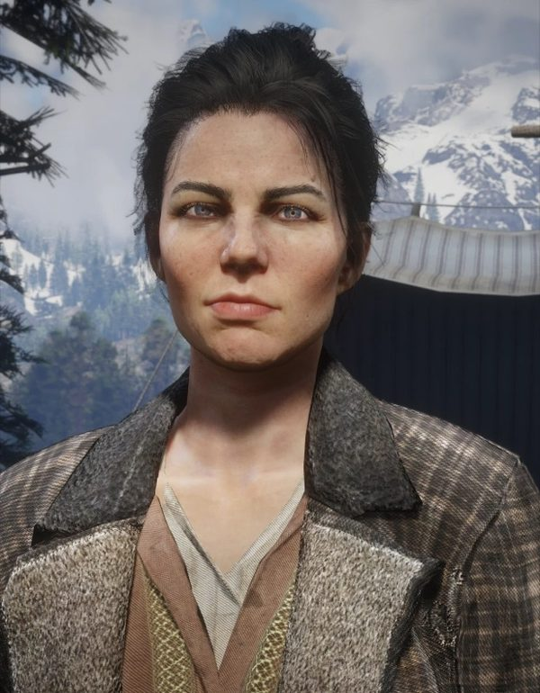
Abigail Marston
In the first weeks at camp, Abigail often stays by Sadie's side and comforts her. When Dutch refuses to rescue John, Abigail turns to Arthur and Sadie, and they turn down her offer to come to Sisika. After Milton takes Abigail to Van Horn, Sadie and Arthur go after her while the rest of the gang returns to camp. Sadie is captured, Abigail frees herself and kills Milton with Sadie's revolver, and Sadie takes her to Jack at Copperhead Landing. In 1907 Abigail welcomes her to lunch at Beecher's Hope, objects to the bounty work and to any hunt for Micah, then lets John go with her on a low-risk job.

Jack Marston
In "Mrs. Sadie Adler, Widow I", Arthur agrees to help her only if she promises to help John, Abigail and Jack get away from the gang when the time comes; she accepts. After the rescue at Van Horn she takes Abigail to Copperhead Landing, where Tilly is hiding Jack, and tells Abigail on the way that the boy is safe. In 1907 it is Jack who calls his parents onto the porch when Sadie rides up to Beecher's Hope. He is at the ranch for the wedding and when she leaves.

Dutch van der Linde
Dutch calms her at the burning ranch, takes her to Colter on his horse and calls her "Mrs. Adler" from then on. At Shady Belle she asks him to take her robbing. After Guarma he learns from Strauss that she kept the gang together. She defies him by freeing John from Sisika, yet attends Colm's hanging at his side. When Dutch sides with Micah and refuses to rescue Abigail, she goes with Arthur. On Mount Hagen in 1907 he greets her ("Mrs. Adler. Been quite a while") moments before Micah takes her hostage, then shoots Micah.

Micah Bell
Their first meeting is in her cellar: Micah takes her for an O'Driscoll, she threatens him with a knife, and when he flips the table a lantern falls and sets her house on fire. On the ride to Van Horn, if Arthur's honor is low, she tells him that Micah is "a goddamn sickness". After Beaver Hollow she and John agree to kill him. In 1907 she tracks him through Cleet to Mount Hagen, flanks him and orders him out ("At least die like a man"), but he seizes her as a hostage when Dutch appears. Dutch's shot frees her, John kills Micah, and she tells John there is money in the cabin.

Charles Smith
In "The Aftermath of Genesis", Charles and Arthur speak of her loss and expect her to refuse food. While Dutch's group is on Guarma, Charles and Sadie move the rest of the gang to Lakay. The two ride with a group of Wapiti to reach Eagle Flies at the oil fields. In 1907 she brings Charles the news of Cleet, and on the road she offers him bounty work: "My last assistant... was put out to pasture." On Mount Hagen a sniper hits him, then he shoots the man stabbing her. Charles leaves Beecher's Hope after the wedding, before she does.

Hosea Matthews
Hosea helps her down from Dutch's horse when she reaches the Colter camp, and at Horseshoe Overlook he is one of those who console her over Jake's death. Hosea is killed by Agent Milton during the Saint Denis bank robbery, in which Sadie takes no part. With the gang members left behind, she gets his body and Lenny's out of the Saint Denis morgue and buries them in Bluewater Marsh. Milton is later shot dead at Van Horn with Sadie's revolver.

Susan Grimshaw
The two women have little direct contact in the story. Miss Grimshaw runs the camp chores, while Sadie, after Clemens Point, takes up guard duty instead. Both are among the survivors who wait at Lakay while Dutch's group is on Guarma. When Arthur throws Strauss out of the gang at Beaver Hollow, both approve. Grimshaw sides with Arthur against Micah at Beaver Hollow and is killed by Micah, while Sadie is at Copperhead Landing with Abigail.

Karen Jones
When Dutch brings Sadie into the Colter camp, he asks Tilly and Karen to warm her up and give her a drink. Karen and Sadie are the only two women of the gang who take turns on guard duty. Karen leaves the gang as it falls apart at Beaver Hollow, before the final train robbery in which Sadie takes part.

Tilly Jackson
Tilly is one of the two women Dutch asks to look after Sadie on the night she arrives at Colter, with orders to warm her up and give her a drink. After Dutch refuses to rescue Abigail, Arthur sends Tilly and Jack to wait at Copperhead Landing, and Sadie brings Abigail there after Van Horn. In the 1907 epilogue, John tells Tilly that he still sees Uncle, Charles and Sadie.

Mary-Beth Gaskill
In the women's cabin at Colter, Arthur can find Mary-Beth trying to comfort Sadie after the loss of her husband, and she continues to console her at Horseshoe Overlook. Both women are among those who wait at Lakay while Dutch's group is on Guarma. Mary-Beth leaves the gang at Beaver Hollow, before the final train robbery in which Sadie takes part; Dutch names her among those who ran off.

Simon Pearson
At Horseshoe Overlook Sadie helps Pearson with the cooking without enthusiasm. At Clemens Point they argue over the endless vegetable chopping, and during one of their quarrels Pearson raises his cleaver and tells her to watch her mouth. Arthur takes her to Rhodes for supplies and to post Pearson's letter to his aunt Cathy, which Sadie reads aloud on the way, imitating him. Pearson leaves the gang at Beaver Hollow. In the epilogue John tells him, at his Rhodes store, that he still sees Sadie.

Uncle
Uncle leaves the gang at Beaver Hollow, before the final train robbery; Dutch names him among those who ran off. In 1907 he lives at Beecher's Hope with the Marstons, and he and Sadie are among the guests at John and Abigail's wedding. After the wedding Charles and then Sadie leave the ranch for good, while Uncle stays on with the family.

Lenny Summers
Lenny is on watch when Dutch brings Sadie into the Colter camp. After the fight with the Lemoyne Raiders, Arthur tells Lenny that Sadie did "more than fine". Lenny is killed during the escape from the Saint Denis bank robbery. While Dutch's group is on Guarma, Sadie and the survivors steal his body and Hosea's from the morgue and bury the two men in Bluewater Marsh.

Sean MacGuire
Sean is freed from bounty hunters and welcomed back with a party at Horseshoe Overlook. After that party Sadie takes a larger part in camp life and greets Arthur more warmly. Sean is shot dead in a Gray family ambush in Rhodes, during the Clemens Point chapter in which Sadie first rides out with Arthur. With Trelawny and Joe, they are the only members of the gang who also appear in Red Dead Online.

Javier Escuella
Javier is among the five men stranded on Guarma while Sadie keeps the rest of the gang together; he reaches Lakay with Micah, ahead of Dutch. During "Our Best Selves", after John is shot off the train, Dutch promises to go back for him with Javier, Micah and Joe, while Sadie stays with Arthur, Bill and Cleet to fight off the soldiers. They leave John behind, and Dutch and Micah tell Arthur that he did not make it. Javier then returns to Beaver Hollow with Dutch instead of helping rescue Abigail.

Bill Williamson
Bill is on Guarma while Sadie organises the survivors, and he is the last to reach Lakay. He shows her little respect despite her role in keeping the gang together. During the Pinkerton attack on Lakay, Bill joins Arthur and Sadie on the flank. In "Our Best Selves" they fight off the soldiers together with Arthur and Cleet. Bill then follows Dutch back to Beaver Hollow rather than go after Abigail.

Kieran Duffy
When the gang holds the O'Driscoll Kieran prisoner at Horseshoe Overlook, Sadie brings him a plate of food, then throws it on the ground in front of him and walks away. According to the French edition of the Red Dead Wiki, at Shady Belle, weeks after his disappearance, she asks Arthur whether there is any news of him. Kieran's beheaded body is then sent into camp on a horse, just before the O'Driscolls attack. Before Colm's hanging, Dutch cites Kieran's fate as a reason the execution must go ahead.

Colm O'Driscoll
Colm's gang killed Jake Adler. In "Icarus and Friends" Sadie tells Arthur that Colm has been caught and sentenced to hang, and that she means to make sure he does not escape again. In "Goodbye, Dear Friend" she attends the hanging in Saint Denis dressed as a society lady, holds one of his men at gunpoint in the crowd, and, once Colm is dead, kills both captives. With Arthur she then wipes out the last of the O'Driscolls at Hanging Dog Ranch, where a letter from Colm to Tom, the gang's new leader, can be found.

Andrew Milton
Milton leads the Pinkerton attack on Lakay that Sadie helps repel, leading Arthur through a trapdoor to flank the agents. He kills Hosea during the Saint Denis robbery, whose body Sadie recovers from the morgue. In "Red Dead Redemption" he takes Abigail to Van Horn; his men capture Sadie in the town while Arthur covers her from the lighthouse. Abigail shoots Milton in the temple with Sadie's revolver after he tells Arthur that Micah has been informing for the Pinkertons.

Edgar Ross
Ross leads the Pinkerton raid on Beaver Hollow after Sadie has left with Abigail for Copperhead Landing. In the 1907 credits, after Sadie, John and Charles have killed Micah, Ross and Archer Fordham examine Micah's body on Mount Hagen, find no money, and question Cliff Smithfield and Morris Peyton at Smithfield's Saloon in Valentine, where Sadie met John again. A 1907 newspaper listing the gang members still at large does not mention her, and she works openly with sheriffs as a bounty hunter.
Arturo Bullard
Bullard is the balloon operator Sadie hires in "Icarus and Friends" to scout Sisika from the air. He refuses to take her up, saying flying upsets a woman's "vapors", and flies with Arthur alone. Near Annesburg he spots Sadie being chased by O'Driscolls; while Arthur fires on them from the basket, Bullard is hit twice and falls to his death. After the crash Arthur blames Sadie for his death and for picking an avoidable fight, and she changes the subject to John.

Leopold Strauss
Strauss is among those Sadie leads to Lakay while Dutch's group is on Guarma. When Dutch arrives, Strauss tells him that the survivors owe it mostly to Sadie, who notes that Strauss was a bundle of nerves during that time. When Arthur throws him out of the gang at Beaver Hollow, Sadie approves and says she won't miss him; Swanson and Miss Grimshaw approve too.
Cleet
Cleet, one of Micah's men, fights beside Sadie and Arthur against the soldiers on the payroll train in "Our Best Selves", then rides with Micah against Arthur and John at Beaver Hollow. In 1907 Sadie learns that he has been seen drinking in Strawberry. On the road there, before they find him, she describes him to John and Charles as "the one with the rat face"; when John answers that both of Micah's men had rat faces, she settles on "the little bastard with the rat face, then." In Strawberry they catch him and put him on the gallows until he names Mount Hagen. If John spares him, she shoots him in the head.
Skills, weapons and horses
Shooting and fighting
Sadie fights from the front. In "Further Questions of Female Suffrage" she shoots one Lemoyne Raider and runs another down with the wagon, and Arthur tells Lenny she did "more than fine". At Lakay, under machine gun fire from Milton's Pinkertons, she leads Arthur through a trapdoor to flank them. In "Our Best Selves" she chases the Army payroll train on horseback, jumps aboard, and holds off the pursuing soldiers with Arthur, Bill and Cleet. Three times, during a shootout, she is the one at the controls of the player's transport, which no other non-playable character does as often: the wagon in "Further Questions of Female Suffrage", the rowing boat in the escape from Sisika in "Visiting Hours", and Arthur's own horse at Van Horn. No other gang member rides Arthur's horse during gameplay. In 1907 a single shot from her drives off the grizzly mauling John in "A Really Big Bastard". On Mount Hagen she guides John forward under a sniper's fire, "rock by rock", and, after being stabbed, flanks Micah and holds him at gunpoint.
Knives
When Micah finds her in her house, she throws a bottle at him, then threatens him with a knife from the table. At Shady Belle Arthur finds her killing three O'Driscolls with a knife. In "Mrs. Sadie Adler, Widow I" she is practising with throwing knives at camp when she asks for Arthur's help, and at Hanging Dog Ranch she stabs her husband's killer to death. At camp, Arthur can play Five Finger Fillet against her: the Red Dead Wiki's character page dates this from "Blessed are the Peacemakers", its minigame page from chapter 4. In 1907 she drives a knife through a man's hand in Smithfield's Saloon.
Tracking and bounty hunting
In Red Dead Online, set in 1898, she is usually seen cleaning her repeater at the Adler Ranch, while Jake admits he still gets lost in the snow. In 1899 she plans the rescue of John herself, arranging the balloon flight over Sisika in "Icarus and Friends". By 1907 she hunts bounties and hands her captures to sheriffs and police chiefs. She finds Nathan Kirk near Strawberry, recovers Shane Finley from a rival hunter in New Austin and collects 400 dollars in Blackwater, tracks Ramón Cortez to Painted Sky on a tip from an encyclopedia salesman, and follows Marshall Thurwell's tracks to a cabin in Tall Trees. She also finds the lead that takes John and Charles to Cleet, then to Micah.
Weapons
Her handgun is a custom Cattleman Revolver: the whole weapon is plated in silver and engraved, and the grip has a light varnish. She wears two of them from chapter 5. On guard duty, from chapter 3, she carries a custom Carbine Repeater, its metal parts blackened and its pale stock bound with a wrap. Her arsenal also includes a Double-Barreled Shotgun. At Van Horn she hands Arthur her Carcano Rifle and goes in with a shotgun, and Abigail kills Milton with Sadie's revolver. In 1907 she knocks out Ramón Cortez with the butt of her shotgun and also owns a Sawed-Off Shotgun, which she hardly uses. Her promotional artwork shows her with two Schofield Revolvers, a model she never uses in the game.
Horses
She leaves the Adler Ranch on Dutch's horse, The Count. Her 1899 horse, Bob, a Gold Dapple Turkoman, appears at camp from Clemens Point onwards, but she first rides him in "Icarus and Friends". She rides him to Hanging Dog Ranch, to the oil fields and in "Our Best Selves", and Bob is not seen again after Van Horn. In 1907 she rides Hera, a dark bay roan Mustang stallion, from "Gainful Employment" onwards; when John says the horse looks mean, she agrees, and both of them refer to Hera as male. Hera carries her bounties across the saddle. She does not ride him in "American Venom", where she rides a dark bay Turkoman, but he reappears with her in the closing credits.
Missions
The Red Dead Wiki lists 21 missions of Red Dead Redemption 2 in which Sadie appears, one of them by voice only, plus four types of free roam missions in Red Dead Online; the French edition gives the same list, without the voice-only mission. The table below follows the order of the story. Sadie is never playable: in chapters 1 to 6 the player controls Arthur Morgan, and in the epilogue John Marston. She gives several of these missions herself, from "Further Questions of Female Suffrage" in chapter 3 to the bounty jobs of 1907.
Red Dead Redemption 2
| Mission | Chapter | Sadie's role |
|---|---|---|
| Outlaws from the West | 1. Colter | Hidden in the cellar of her ranch after the O'Driscoll raid, she comes out after the shootout, fights off Micah with a bottle and a knife, and is led out of the burning house by Dutch and Arthur. She rides back to Colter on Dutch's horse and gives her name on the way. |
| Enter, Pursued by a Memory | 1. Colter | One of the gang members sheltering in a cabin at Colter when Abigail asks Arthur to look for John. |
| Further Questions of Female Suffrage | 3. Clemens Point | Argues with Pearson because she is tired of cutting vegetables, rides to Rhodes with Arthur, buys supplies and new clothes, then starts and wins a fight with Lemoyne Raiders on the way back. She joins the camp guard afterwards. |
| The Battle of Shady Belle | 3. Clemens Point | At Clemens Point when agents Milton and Ross offer the gang a deal; the whole gang refuses it and moves to Shady Belle. |
| Horsemen, Apocalypses | 4. Saint Denis | Talks with Arthur about her place in the gang before the O'Driscoll attack on Shady Belle. She refuses to take shelter in the house and kills three attackers with a knife outside. |
| Dear Uncle Tacitus | 5. Guarma | Voice only. The letter signed "Caroline" that Arthur finds at Shady Belle, addressed to "Uncle Tacitus", tells him the others have gone to Lakay. |
| Fleeting Joy | 5. Guarma | Tells Arthur that John is held at Sisika. Strauss tells Dutch the gang owes its survival mostly to her. During the Pinkerton attack she leads Arthur through a trapdoor to flank the agents, then agrees with Arthur to free John against Dutch's wishes. |
| That's Murfree Country | 5. Guarma | Listed by the Red Dead Wiki among the characters of the mission, which moves the gang from Lakay to Beaver Hollow; the mission page gives her no specific action. |
| Icarus and Friends | 6. Beaver Hollow | Arranges the hot air balloon of Arturo Bullard to scout Sisika. Chased by O'Driscolls near Annesburg, she is pulled into the basket by Arthur after Bullard is shot dead, survives the crash and plans the prison break. She also tells Arthur that Colm O'Driscoll is to hang. |
| Visiting Hours | 6. Beaver Hollow | Refuses to take Abigail along, rows to Sisika with Arthur, is held at gunpoint by the guard Milliken until Arthur takes him hostage, then fights her way off the island with Arthur and John. |
| Goodbye, Dear Friend | 6. Beaver Hollow | Attends Colm's hanging in Saint Denis dressed as a society lady. She and Dutch each hold an O'Driscoll at gunpoint; once Colm is hanged, she kills both hostages, which starts a shootout. |
| Mrs. Sadie Adler, Widow I | 6. Beaver Hollow | Asks Arthur to help her wipe out the last O'Driscolls. If he accepts, she promises in return to help John, Abigail and Jack when the time comes; if he refuses, she rides off alone. |
| Mrs. Sadie Adler, Widow II | 6. Beaver Hollow | Attacks Hanging Dog Ranch with Arthur, takes the house while he clears the barn, and kills Tom, the man who murdered her husband, with a knife. |
| My Last Boy | 6. Beaver Hollow | Rides with Arthur, Charles and a few Wapiti to reach Eagle Flies at the oil fields. She offers to help carry the wounded Eagle Flies back to his father; Arthur declines. |
| Our Best Selves | 6. Beaver Hollow | Boards the Army payroll train with Arthur, John and Cleet, then holds off the pursuing soldiers with Arthur, Bill and Cleet. |
| Red Dead Redemption | 6. Beaver Hollow | Rides with Arthur to Van Horn to free Abigail, sends him to the lighthouse with her rifle and is captured by Milton's men. Abigail kills Milton with Sadie's revolver. Sadie then takes Abigail to Jack at Copperhead Landing. |
| Gainful Employment | Epilogue, part 1 | Meets John again in a Valentine saloon, stabs Bubba's hand and smashes a glass into Jeb's face, then takes John to Strawberry to catch the embezzler Nathan Kirk. |
| An Honest Day's Labors | Epilogue, part 2 | Takes back the bounty Shane Finley from her rival James Langton in Pike's Basin, then collects $400 in Blackwater and splits it with John. |
| A Quick Favor for an Old Friend | Epilogue, part 2 | Hunts the Del Lobo member Ramón Cortez with John at Painted Sky, guards him in the Rhodes jail, and recaptures him after his gang breaks him out. |
| A Really Big Bastard | Epilogue, part 2 | Visits Beecher's Hope and gets Abigail's permission to take John bounty hunting. In Tall Trees she drives off a grizzly bear with a shot and knocks out the bounty, Marshall Thurwell. |
| American Venom | Epilogue, part 2 | Finds Cleet in Strawberry with John and Charles and gets Micah's location from him on the gallows. On Mount Hagen she is stabbed in the stomach, then holds Micah at gunpoint before he takes her hostage. She returns to Beecher's Hope for the wedding. |
Red Dead Online
In 1898, a year before the story mode, Sadie and her husband Jake are strangers who give free roam missions at Adler Ranch, in Ambarino. Jake gives them during the day and Sadie at night. The wiki lists four types under their names: "Rescue", "On The Hunt", "Recovery" and "Delivery". The hunt targets a bear, one rescue involves bear trappers attacked by a grizzly near the ranch, and the introductory recovery job sends the player after a cart held by the Skinner Brothers near Lake Isabella. All of them give positive honor.
Notable people Sadie kills
The Red Dead Wiki names three entries: the O'Driscoll Boys as a group, Tom and, depending on the player, Cleet. The table adds two cases taken from the mission pages: the Lemoyne Raiders of chapter 3, the first men she is shown shooting, and James Langton, whose killer may be Sadie or John. Unnamed enemies killed in the other shootouts (Pinkertons at Lakay and Van Horn, Sisika guards, Army soldiers, Micah's men) are not listed.
| Name | Mission | Circumstances |
|---|---|---|
| Lemoyne Raiders | Further Questions of Female Suffrage | Two Raiders order the wagon to stop on the road back from Rhodes. Sadie refuses, shoots one and runs the other down with the wagon; she and Arthur then kill the rest of the group, up to ten men. |
| O'Driscoll Boys | Several missions | She kills O'Driscolls at Shady Belle (three with a knife in "Horsemen, Apocalypses"), near Annesburg in "Icarus and Friends" and at Hanging Dog Ranch. At Colm's hanging in "Goodbye, Dear Friend", she shoots her hostage and Dutch's once Colm is dead. |
| Tom | Mrs. Sadie Adler, Widow II | The heavy, bearded O'Driscoll who killed Jake Adler and led the last of the gang after Colm's death. Sadie asks Arthur to leave him to her, corners him upstairs in the ranch house and stabs him to death. His death ends the O'Driscoll gang. |
| James Langton | An Honest Day's Labors | Possible: a rival bounty hunter who stole Shane Finley from her. He dies in the shootout at Pike's Basin, killed by John or by Sadie depending on how the fight goes. Sadie then tells Police Chief Oswald Dunbar that Langton died trying to rob her. |
| Cleet | American Venom | Depends on the player: after Cleet gives up Micah's hideout on Mount Hagen, Sadie tells John to hang him. If John hangs him, she thanks him; if John spares him, she shoots Cleet in the head herself. |
Quotes
The lines below are given as spoken in the game, in the original English, with the mission and the person addressed.
Red Dead Redemption 2, chapters 1 to 3
They came three days ago... and my husband, they...
Outlaws from the West (RDR2, chapter 1), to Dutch, outside her burning houseSadie Adler. Mrs... I... he....he was my husband.
Outlaws from the West (RDR2, chapter 1), to Dutch, who asks her name on the ride to ColterI ain't afraid of dying.
Further Questions of Female Suffrage (RDR2, chapter 3), to Arthur, who warns her that the gang is hunted by armed menNobody's taking nothing from me ever again.
Further Questions of Female Suffrage (RDR2, chapter 3), to Arthur, on the road back from Rhodes
Red Dead Redemption 2, chapters 4 to 6
You're the only one of these fools that I trust.
Mrs. Sadie Adler, Widow I (RDR2, chapter 6), to Arthur, when he hesitates to go after the O'DriscollsHe was a good man, my Jakey. We was always sweet on one another. I miss him every day... every moment. They turned me into a monster, Arthur. But my memories of him... they still pure.
Mrs. Sadie Adler, Widow II (RDR2, chapter 6), to Arthur, after killing TomCome on, Arthur... let's go get her. You and me is all we need.
Red Dead Redemption (RDR2, chapter 6), to Arthur, after Dutch refuses to rescue AbigailMicah's a goddamn sickness.
Red Dead Redemption (RDR2, chapter 6), to Arthur, on the ride to Van Horn (low honor)Sure... guess he began to believe he was God, or something.
Red Dead Redemption (RDR2, chapter 6), to Arthur, about Dutch, on the ride to Van Horn (high honor)Listen, if you hadn't shown up at my house that night, I'd be dead. And even this bullshit beats dead.
Red Dead Redemption (RDR2, chapter 6), to Arthur, who apologizes for dragging her into the gang's troubles (high honor)Like I said, Arthur, we don't need them. We're gonna make this right, me and you together, what's left of it. Now come on.
Red Dead Redemption (RDR2, chapter 6), to Arthur, on the ride to Van HornI know, Arthur. But, just... do it my way, honey. It's for the best. Get up some place high, like... the lighthouse or something... and cover me. Please.
Red Dead Redemption (RDR2, chapter 6), to Arthur, at Van Horn, after hearing him cough
Red Dead Redemption 2, epilogue (1907)
Charles. I found him... I found Micah.
American Venom (RDR2, epilogue), to Charles, at Beecher's HopeThe little bastard with the rat face, then.
American Venom (RDR2, epilogue), to John and Charles, about Cleet, on the road to Strawberry, before they find himYou're damn right he will. We owe this to Arthur.
American Venom (RDR2, epilogue), to Charles, who says Cleet will talkWell, nowadays I'm almost always killing old friends. Old friends and new. Ain't that right, John?
American Venom (RDR2, epilogue), to Charles, who says he kills old friends when he is not building housesJohn, you given him the family bug.
American Venom (RDR2, epilogue), to John, after Charles says he wants to go to Canada and start a familyYou know, I been thinking I might get outta here too. Down South America, maybe. It's wild, but... less mean, I guess. I'd run protection for a gold mine, or... take up with a handsome revolutionary... I don't know. Something. See something else, at least.
American Venom (RDR2, epilogue), to John and Charles, on the road to StrawberryHey, you know what... I'm bored of this. Let's hang the bastard.
American Venom (RDR2, epilogue), to John, while he beats Cleet in StrawberryCome on out, Micah. At least die like a man.
American Venom (RDR2, epilogue), to Micah, whom she has flanked on Mount HagenI ain't dying, just... go get him, I'll be fine I just... need a rest.
American Venom (RDR2, epilogue), to John, after being stabbed on Mount HagenHurry up. I got a wedding I wanna go to.
American Venom (RDR2, epilogue), to John, who goes to search Micah's cabin after his death
Development and performance
Casting
Sadie Adler is played by Alex McKenna, an American actress born in 1984. Her early television roles include The Trouble with Larry and Winnetka Road (1994); she gained wider attention with the film The Stupids (1996) and the series You Wish (1997), and later played Abby Macy in Crossing Jordan. She is credited with both the voice and the performance capture of the character. McKenna told GamesRadar+ in March 2019 that she did not know what she was auditioning for: "they said it was top secret, just to show up, sign something, and read." After two callbacks, she learned she was working for Rockstar Games only when she reached the studio, where she saw the company's logo coming out of the elevator.
Five years of capture
Rockstar's secrecy also applied to the script. "I didn't know much for the first six months, about anything", McKenna said; by her estimate, it was "conservatively" a couple of years before she had a clear picture of Sadie's arc. Motion capture director Rod Edge explained that he often recorded scenes without knowing what came next. He said the size of the role at the start was the writers' secret, but added: "I've got a feeling we've beefed up the character because Alex was so good." Her work on the game lasted five years. Scenes were shot on a soundstage with the cast acting together, rather than in separate recording booths.
The performance
Rod Edge described Sadie as "so feminine but so tough", adding that "it's rare to see that kind of character". McKenna said she was often asked whether Sadie was meant to be Arthur's love interest: "I think it's far more interesting that she isn't because she wants to be seen and treated like an equal." In a second GamesRadar+ piece the same day, Cali Elizabeth Moore (Abigail) recalled the early camp scene in which Abigail tells the newly arrived Sadie that she is safe; McKenna called it a rare soft moment for a character whose scenes were mostly gunfights.
In the GamesRadar+ round table "Sisterhood, shotguns and slapping" (7 March 2019), McKenna came back to the scene of Sadie's revenge on the O'Driscolls in chapter 6, in which Sadie tells Arthur that they turned her into a monster: "That's actually haunted me a little bit. I don't think I've ever been so tired as that day on set." She said the end of production was "a bit like leaving home", and that she stayed close to Moore, Roger Clark (Arthur) and Rob Wiethoff (John). Asked what happens to Sadie after the epilogue, she answered: "I think she's adventuring as long as she can." McKenna is also credited for Red Dead Online.
Reception
Critics
In her review for GameSpot, published on 25 October 2018, Kallie Plagge wrote that the game's new characters "are among the best, too; Sadie Adler is a personal favorite for reasons I won't spoil." In March 2019, Rachel Weber of GamesRadar+ opened her feature on the character by calling Arthur the face of the game and Sadie "its wounded soul". She noted that Sadie is never used as a romantic interest for Arthur.
Award nomination
Alex McKenna was nominated for Performance in a Drama, Supporting at the 18th NAVGTR Awards (National Academy of Video Game Trade Reviewers), whose nominees were announced on 11 February 2019. The other nominees in the category were Clancy Brown (Detroit: Become Human), Jeremy Davies (God of War), Laura Bailey and William Salyers (Marvel's Spider-Man). Roger Clark was nominated in the lead category for Arthur.
Rankings
- TheGamer, 18 July 2019: 3rd of the 10 best characters of Red Dead Redemption 2, behind Arthur Morgan and Dutch van der Linde.
- DualShockers, 26 April 2023: 3rd of the 10 best characters of Red Dead Redemption 2, also behind Arthur and Dutch.
- Game Rant, 14 August 2023: 3rd of the 10 best characters of the whole Red Dead Redemption series, behind Arthur and John Marston; the list calls her the best female character of the series.
Sadie is also regularly named in the press as a possible lead for a future Red Dead game. Game Rant published two such pieces in 2021, on 16 May and 4 June, both by Megan Elisabeth Gingerich. Rockstar has not announced any new Red Dead game or any return of the character.
Other media and legacy
Marketing
Rockstar's character description of Sadie is quoted in the Personality section above. The second trailer, released on September 28, 2017, includes the Valentine saloon scene from "Gainful Employment" in which she stabs a man through the hand. The third trailer, released on May 2, 2018, shows the opening scene of "Mrs. Sadie Adler, Widow", with Arthur still looking healthy. The screenshots posted on Rockstar's website before release include Sadie back to back with John, a group shot of the gang and a scene of her with Arthur at Van Horn; one more photo of Sadie in Van Horn was published only on Rockstar's Twitter account. On September 6, 2018, according to Game Informer and rdr2.org, Rockstar released portraits of the 23 members of the gang, Sadie among them.
Red Dead Redemption 2: The Complete Official Guide, published by Piggyback on October 26, 2018, gives her a profile (page 357) that describes her upbringing in the mountains, where she learned to ride, shoot and hunt, and the life she shared with Jake on their farm.
Music
"Mrs. Sadie Adler, Widow", composed by Woody Jackson and 4 minutes 24 seconds long, is the fourth track of The Music of Red Dead Redemption 2: Original Score. Rockstar announced the album on its Newswire on July 19, 2019, and released it on August 9, 2019. Sadie is the only character with a track of the score named after her.
Press and appearances
On March 7, 2019, GamesRadar+ published two features by Rachel Weber on the character: "The making of Red Dead Redemption 2's incredible Mrs. Adler", with McKenna and motion capture director Rod Edge, and "Sisterhood, shotguns and slapping", a round table with the actresses of the gang's women. McKenna also appeared with Roger Clark, Rob Wiethoff, Curzon Dobell, Peter Blomquist and Steve J. Palmer, among others, on the Red Dead Redemption II cast panel at SacAnime Summer 2019.
Trivia
Story and characters
- In "Further Questions of Female Suffrage", Sadie tells Arthur she used to play the harmonica when her husband was alive. If the player brings her a new one, she thanks Arthur but says she will not play it, because she only ever played for Jake.
- When she starts the gunfight with the Lemoyne Raiders, Arthur remarks that a new pair of pants has her thinking she is Landon Ricketts, the gunslinger of Red Dead Redemption. When Arthur returns to the store later, the clerk may comment on her new clothes but still calls her Arthur's friend.
- In Arthur's journal, after "Horsemen, Apocalypses", the high honor entry praises the bravery Mrs. Adler showed in the fight, which Arthur believes is driven by love.
- Her closing words to Arthur in "Mrs. Sadie Adler, Widow II" depend on honor. With high honor she says that, apart from her Jake, he is the best man she has known; with low honor, that he is a confusing man but the best friend she has.
- Turning down her request in "Mrs. Sadie Adler, Widow I" lowers Arthur's honor and closes part II. After part II, the O'Driscolls no longer appear in free roam, and Micah's associates Cleet and Joe show up at camp; if the request is refused, they only appear from "My Last Boy".
- Before stabbing Tom at Hanging Dog Ranch, Sadie reminds him that she had told him he would see her again. The game does not show how she learned that he was Jake's killer.
- Arthur's journal contains a drawing of Sadie.
- In Arthur's journal, the "Gang Savings" entry for the oil field job reads "A, D, C, B & S" and the one for the Army payroll train "A, D, B, JE, S, M, Joe & Cleet". In both, "S" stands for Sadie.
- Sadie is never named in the game's newspapers. "Doors of Iron Down", the article on the Sisika breakout, only mentions a man and a woman who helped one convict escape by boat, and recalls a balloon seen over the prison a few days earlier. The 1907 article "Notorious Bad Man Alive" lists Bill Williamson, Micah Bell, John Marston and Charles Smith as gang members still at large, but not her.
- Micah and Sadie come face to face at two points of the story: in "Outlaws from the West", when they first meet, and in "American Venom", when they meet for the last time. On each occasion Micah threatens her and Dutch intervenes: he pushes Micah away in her burning house, and eight years later he shoots Micah while Micah holds her hostage.
- In the first weeks at camp, Abigail is one of the women who comfort Sadie after Jake's death. In chapter 6, Sadie helps free John from Sisika, takes Abigail to Jack after the Van Horn rescue, and in 1907 her bounty jobs help John pay the loan on Beecher's Hope.
- In "An Honest Day's Labors", the only story mission set in New Austin, Sadie never names the state: she calls it the desert down south. If Shane Finley is brought in dead, Police Chief Dunbar pays less and John's share drops from $200 to $150.
- In "Icarus and Friends", Sadie speaks of Strauss's nerves as if he were still in the gang, even if Arthur has already thrown him out; she has not been back to camp since "Fleeting Joy". In the end credits, she watches John and Abigail's wedding with Charles, then leaves Beecher's Hope on horseback once healed.
Gameplay
- Only four characters in Red Dead Redemption 2 are given a recurring musical theme of their own; besides Sadie, they are John Marston, Colm O'Driscoll and Angelo Bronte. Hers returns in several of her missions, including part II of "Mrs. Sadie Adler, Widow" and "Gainful Employment".
- After "Further Questions of Female Suffrage", she takes turns on camp guard duty, walking the perimeter with her Carbine Repeater. She becomes available as an opponent at Five Finger Fillet in camp: the character page dates this from "Blessed are the Peacemakers" (chapter 3), the minigame page from chapter 4.
- Pushed too far by Arthur at camp, Sadie can slap him, and she can do the same to John in the epilogue. No other woman of the gang reacts to provocation with her hands: the only other one who slaps Arthur, Susan Grimshaw, does so solely when he needs a bath.
- In "Icarus and Friends", if the player fails to pull her up into the balloon, she can be seen falling from the rope to her death. In "Horsemen, Apocalypses", she can be set on fire with a fire bottle and has dedicated voice lines for it.
- In "My Last Boy", if Arthur does not pull the soldier off Eagle Flies, Sadie does it. In "Our Best Selves", using volatile dynamite on the armored car can kill Sadie or Cleet if they stand too close, which fails the mission.
- In "Gainful Employment", following Sadie instead of questioning the townsfolk leads to a man at the stables who tells her where Nathan Kirk is staying, which skips the search. Catching up with her after the mission can trigger a glitch that makes her a free roam companion, with Kirk still on her horse.
- With speaker names shown in the subtitles, Sadie appears as "Stranger" whenever one of her missions is replayed after the end of the game.
- Her engagement ring is visible on her bare hand throughout the game, with two exceptions: "A Really Big Bastard" and Red Dead Online. In "American Venom", the ring only appears on her finger at John and Abigail's wedding.
Development and cut content
- The game files contain unused clothing for Sadie: two pairs of pants, a hat, a shirt, a shawl, a belt and a coat, along with an unused head model and hair. They also hold a "kidnapped" outfit, identical to her early chapter 3 clothes without the dress, and a barefoot version of her 1907 model.
- Several pre-release screenshots show Sadie with horses that do not appear in the final game. One of them shows Arthur, Sadie and Bob during "Red Dead Redemption" in an earlier version of Van Horn, without its lighthouse.
- In the second trailer, Bubba, the man Sadie stabs through the hand in the Valentine saloon, has a beard and a hat. His model was redesigned before release.
Red Dead Online
- In Red Dead Online, set in 1898, Sadie first meets the player at Adler Ranch on her return from a supply run. She holds the newcomer at gunpoint and warns that she will kill them if they betray her or Jake.
- Four members of the Van der Linde gang appear in Red Dead Online: Sadie, Josiah Trelawny, Joe and Sean MacGuire. Of the four, only Sadie gives missions that earn positive honor. Neither she nor Joe has joined the gang in 1898.
- "The Cordell", an outfit sold in Red Dead Online, is based on Sadie's 1907 bounty hunter clothes.
Name and references
- According to the Red Dead Wiki, Sadie married Jake Adler on September 7, 1896. Their wedding photograph sits on the mantelpiece of the ranch in Red Dead Online, and Arthur can point it out while searching the house in "Outlaws from the West".
- Her 1907 horse, Hera, shares its name with the Greek goddess of marriage.
Gallery
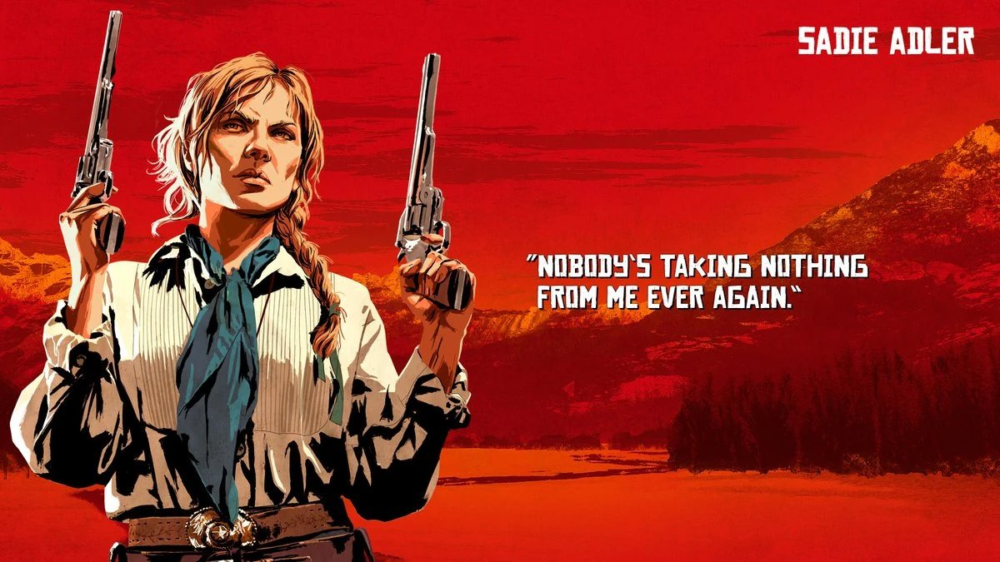
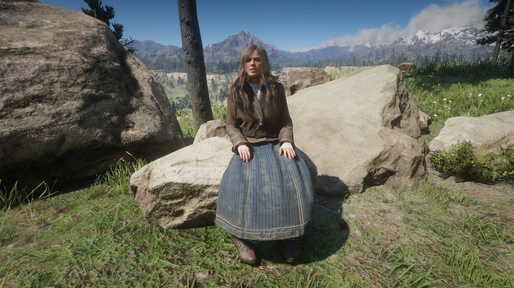
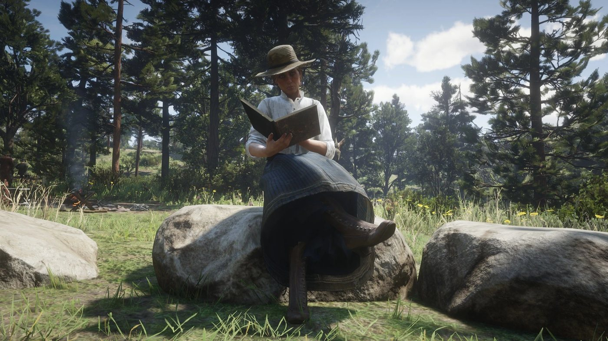
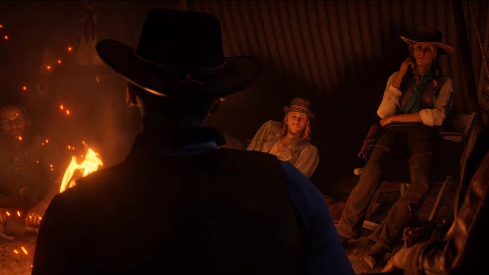
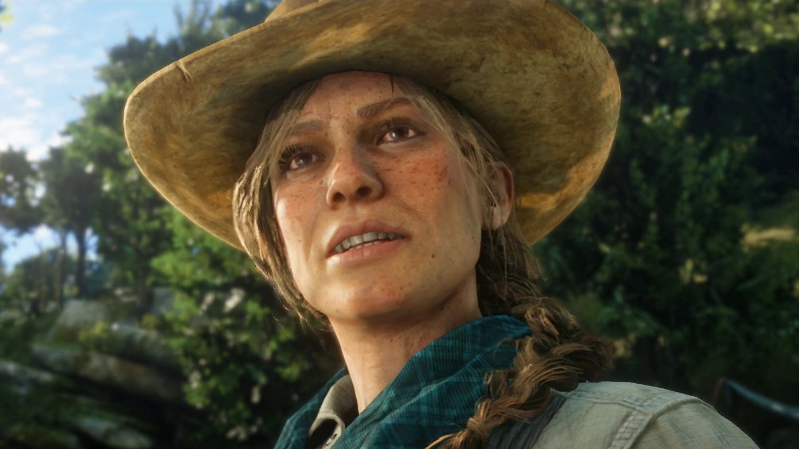
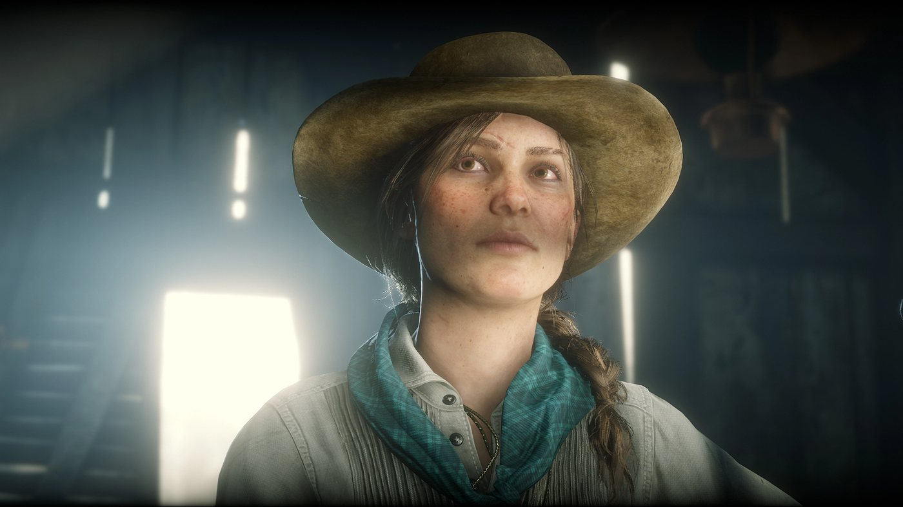
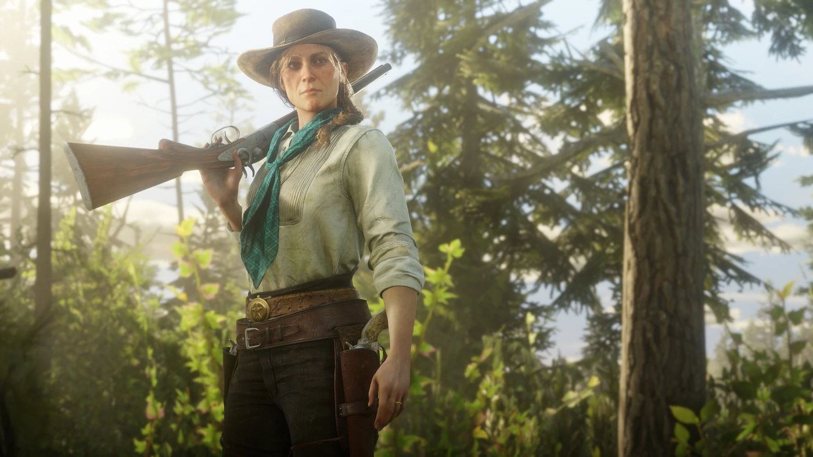
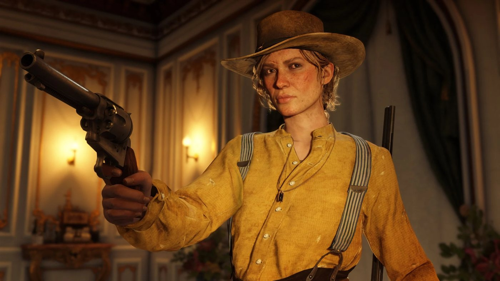
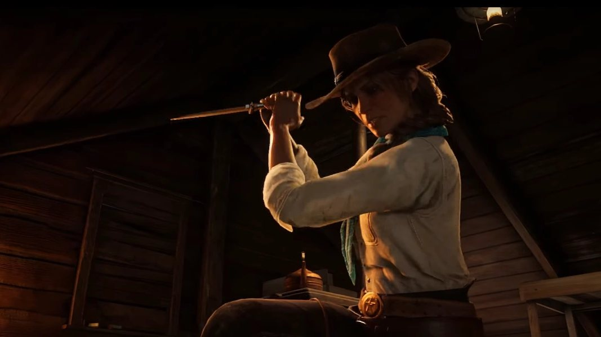
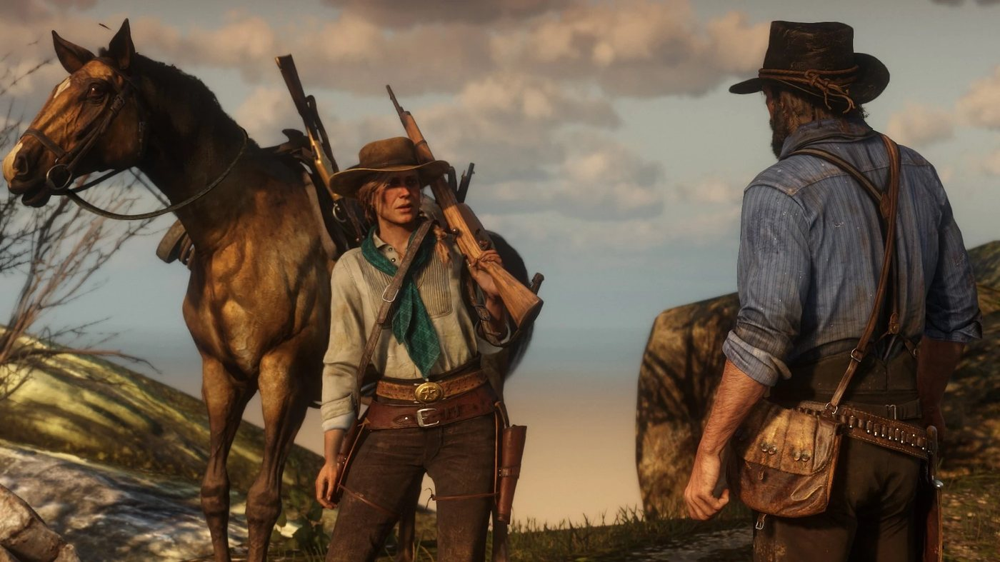

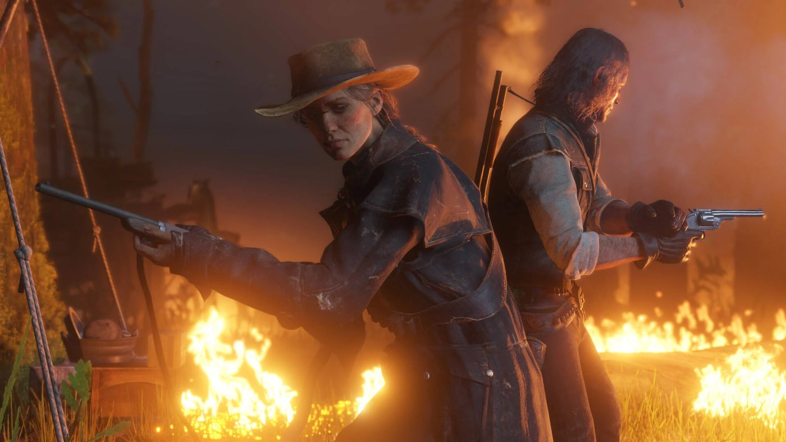

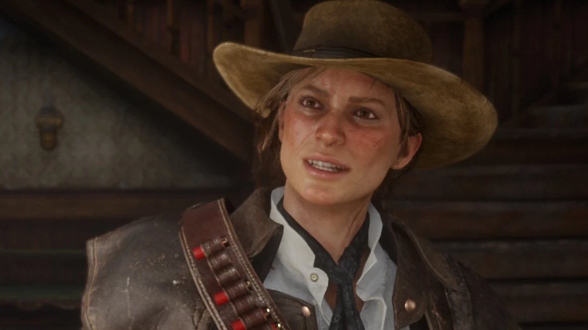
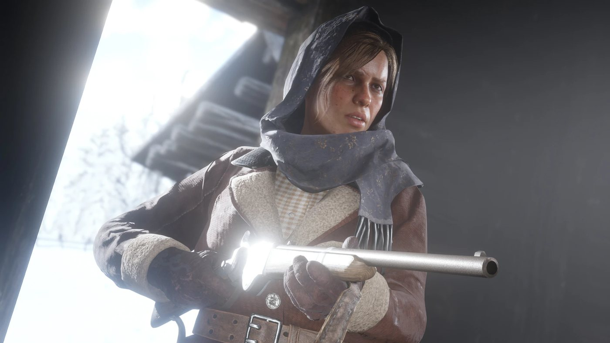